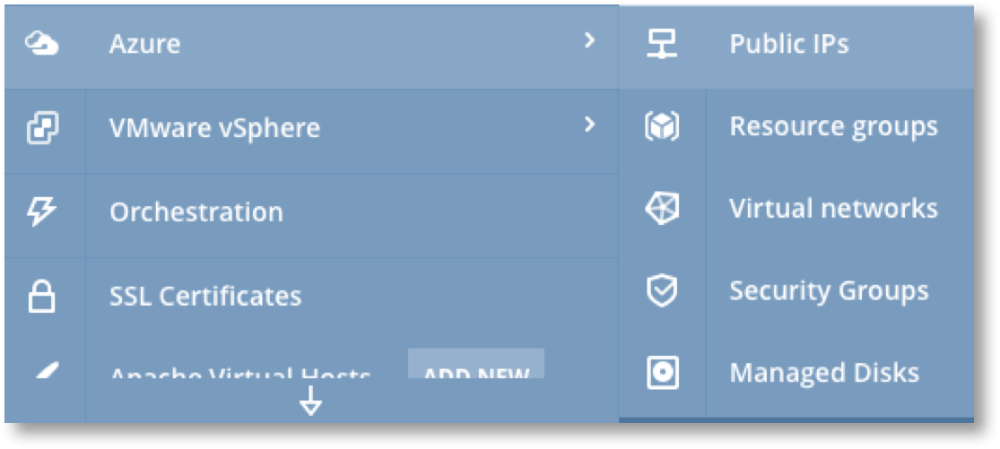
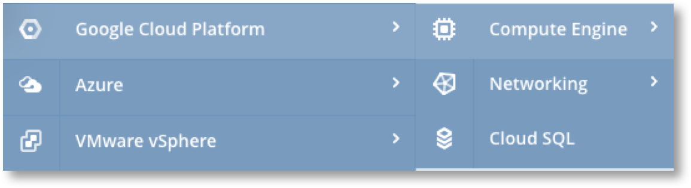
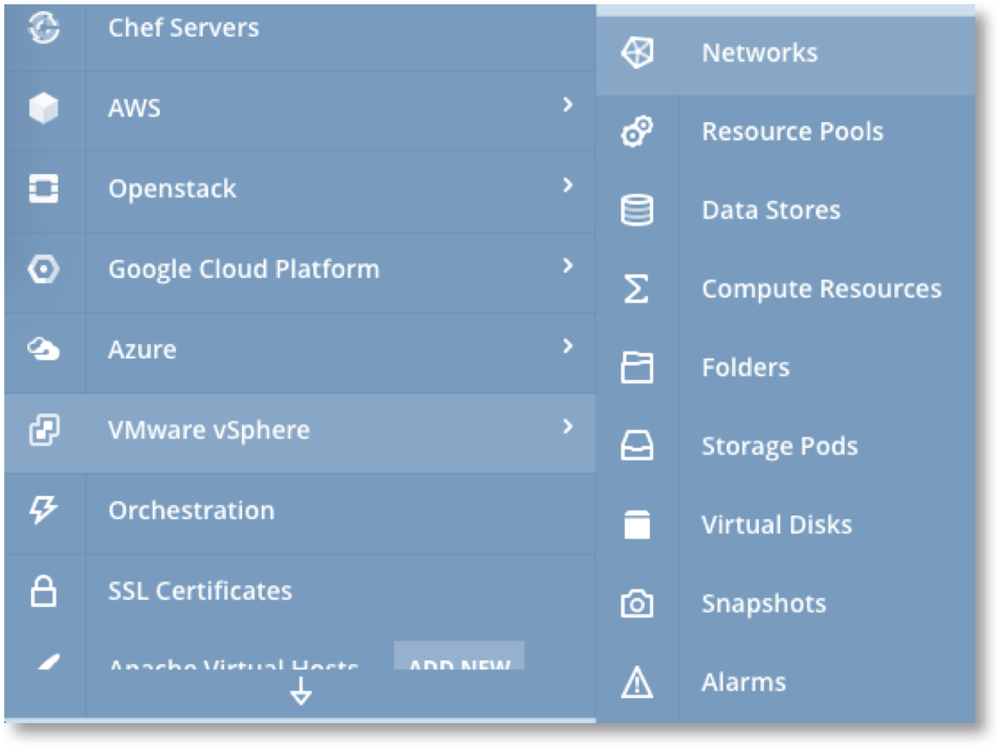

Supported Cloud Services and Features¶

This reference page provides details of the Cloud specific services and features that are configurable through Scalr. The page provides details of how Scalr works with each service and feature, including how Scalr enhances the use of services to automatically integrate them with with Servers. This page DOES NOT provide details of functionality the service or feature itself but instead provides links to the relevant page in the Cloud providers own documentation.
AWS Features and Services¶
{kind=link}

Spot Instances¶
Scalr supports the use of Spot Instances. This is configured at the Farm Role scope, not via the AWS main menu. See Farm Role - EC2 Tab for full details.
S3 Buckets¶
| Description | Scalr Support | External Docs |
|---|---|---|
| Amazon S3 is an object storage service | Full management of S3 buckets including enabling Transfer Acceleration and linking to CloudFront | Amazon S3  |
CloudFront¶
| Description | Scalr Support | External Docs |
|---|---|---|
| Amazon CloudFront is a global content delivery network (CDN) service that securely delivers data, videos, applications, and APIs with low latency and high transfer speeds. | Full configuration of CloudFront distributions and and linking to S3 Buckets or Load Balancers | Amazon Cloud Front |
Relational Database Service (RDS)¶
| Description | Scalr Support | External Docs |
|---|---|---|
| Amazon RDS provides a low administration database service that supports multiple database engines including, PostgreSQL, MySQL, MariaDB, Oracle, and Microsoft SQL Server | Configuration of RDS Instances, Clusters, Security & Parameter Groups and Snapshots. Also provides access to the RDS Events Log | Amazon RDS |
EC2 - Load Balancers¶
| Description | Scalr Support | External Docs |
|---|---|---|
| Amazon Elastic Load Balancing automatically distributes incoming application traffic across multiple targets, such as Amazon EC2 instances, containers, and IP addresses. | Configuration of Application, Network and Classic Load Balancers. Configuration of Target Groups for Listeners and ALB’s. Scalr also provides the capability to link ELB’s to Farm Roles so that instances are automatically registered and deregistered |
Amazon Load Balancers |
EC2 - Elastic IP’s¶
| Description | Scalr Support | External Docs |
|---|---|---|
| Amazon Elastic IP’s are fixed IP addresses that can be allocated to an instance. | Elastic IP’s are assigned to Farm Roles. Scalr will ensure that the IP is reassigned to a replacement server in the Farm Role if a server is terminated or fails. Thus Scalr ensures that a given Elastic IP will always point to a Server of the same Farm Role. | Elastic IP's |
EC2 - Security Groups¶
| Description | Scalr Support | External Docs |
|---|---|---|
| Security Groups act as a virtual firewalls that control the traffic for one or more instances. | Full configuration of security groups and rules either through Farm Roles or through the main menu. | Security Groups |
Warning
Security Group changes are applied immediately to the Servers they are linked to when the changes are saved in Scalr. This could have an immediate impact on the flow of network traffic and could disrupt production services if mistakes are made.
EC2 - EBS Volumes¶
| Description | Scalr Support | External Docs |
|---|---|---|
| Amazon’s Elastic Block Store (EBS) can be used as block level storage volumes for your Amazon EC2 instances. An EBS Volume functions as a network-attached form of block level storage that persists independently from a Server’s life. | Management of EBS Volumes independently of Servers. Attach and detach volumes on running servers. Access to CloudWatch stats. |
EBS Volumes |
EC2 - EBS Snapshots¶
| Description | Scalr Support | External Docs |
|---|---|---|
| EBS Snapshots are incremental backups of EBS Volumes stored on S3. Each snapshot contains only the changes since the volume was created or the last snapshot. | Manual creation of Snapshots. Create new Volumes from Snapshots. Configure Auto-Snapshot. Copy Snapshots to other regions. |
EBS Snapshots |
Elastic Map Reduce (EMR)¶
| Description | Scalr Support | External Docs |
|---|---|---|
| Amazon Elastic MapReduce (EMR) is an AWS tool for big data processing and analysis. EMR offers the expandable low-configuration service as an easier alternative to running in-house cluster computing. | Creation and management of EMR clusters. | Amazon EMR |
Elastic File System (EFS)¶
| Description | Scalr Support | External Docs |
|---|---|---|
| Amazon Elastic File System (Amazon EFS) provides simple, scalable file storage for use with Amazon EC2. With Amazon EFS, storage capacity is elastic, growing and shrinking automatically as you add and remove files, so your applications have the storage they need, when they need it. | Creation and management of EFS. | Amazon EFS |
Route53¶
| Description | Scalr Support | External Docs |
|---|---|---|
| Amazon Route 53 is a scalable and highly available Domain Name System providing domain name registration, DNS routing and automated DNS health checks | Creation and management of Route 53 zones. Creation and management of Health Checks. Automation of hostname registration with Route 53 through Webhooks. |
Amazon Route 53 |
IAM - SSL Certificates¶
| Description | Scalr Support | External Docs |
|---|---|---|
| Amazon ACM handles the complexity of creating and managing public SSL/TLS certificates for your AWS based websites and applications. | Upload of SSL Certificates to ACM | IAM SSL Certificates |
VPC’s and Subnets¶
| Description | Scalr Support | External Docs |
|---|---|---|
| Amazon Virtual Private Clouds (VPC) provides isolated private networking functionality for applications. | Full Management of VPC’s and Subnets | Amazon VPC's |
Lambda¶
| Description | Scalr Support | External Docs |
|---|---|---|
| AWS Lambda is a compute service that lets you run code without provisioning or managing servers. | Creation and Management of Lambda Functions | Amazon Lambda |
Azure Features and Services¶
{kind=link}
Public IP’s¶
| Description | Scalr Support | External Docs |
|---|---|---|
| Public Ip’s for Instances | Interface to view and delete Public IP’s that are assigned to Scalr managed Instances. | Azure Public IP's |
Resource Groups¶
| Description | Scalr Support | External Docs |
|---|---|---|
| A container that holds related resources for an Azure solution. The resource group can include all the resources for the solution, or only those resources that are to be managed as a group. | Interface for directly managing Resource Groups. Linking resource Groups to Farm Roles and therefore the Servers launched from a Farm Role. |
Azure Resource Groups |
Virtual Networks¶
| Description | Scalr Support | External Docs |
|---|---|---|
| Azure Virtual Network enables many types of Azure resources, such as Azure Virtual Machines (VM), to securely communicate with each other, the internet, and on-premises networks. | Interface for directly managing Virtual Networks and Subnets. Linking Virtual Networks and Subnets to Farm Roles and therefore the Servers launched from a Farm Role. |
Azure Virtual Networks |
Security Groups¶
| Description | Scalr Support | External Docs |
|---|---|---|
| Security Groups act as a virtual firewalls that control the traffic for one or more instances. | Full configuration of security groups and rules either through Farm Roles or through the main menu. | Azure Security Groups |
Managed Disks¶
| Description | Scalr Support | External Docs |
|---|---|---|
| Azure Managed Disks simplifies disk management for Azure IaaS VMs by managing the storage accounts associated with the VM disks. You only have to specify the type (Standard HDD, Standard SSD, or Premium SSD) and the size of disk you need, and Azure creates and manages the disk for you. | Full configuration of Managed Disks. Allocation of managed disks to Farm Roles as additional Storage. |
Azure Managed Disks |
Google Cloud Platform Features and Services¶
{kind=link}
Persistent Disks¶
| Description | Scalr Support | External Docs |
|---|---|---|
| Persistent Storage for instances. | From main menu view and resize. Can be created and flagged for mounting in Farm Roles | GCE Persistent Disks |
Snapshots¶
| Description | Scalr Support | External Docs |
|---|---|---|
| Snapshots are incremental compressed backups of Persistent Disks. Each snapshot contains only the changes since the disk was created or the last snapshot | View only. | GCE Snapshots |
External IP’s¶
| Description | Scalr Support | External Docs |
|---|---|---|
| A static external IP address is an external IP address that is reserved for your project until you decide to release it. | View and delete only. | GCE External IP's |
Cloud SQL¶
| Description | Scalr Support | External Docs |
|---|---|---|
| Cloud SQL is a fully-managed database service that makes it easy to set up, maintain, manage, and administer your relational databases on Google Cloud Platform. | Full management of Cloud SQL Instances including linking to Farms for automatic deployment when a Farm is launched. | GCE External IP's |
Openstack Features and Services¶

Volumes¶
| Description | Scalr Support | External Docs |
|---|---|---|
| OpenStack Volumes are block storage devices that may be attached to instances in order to enable persistent storage. | Management of Volumes independently of Servers. Attach and detach volumes on running servers. |
Openstack Volumes |
Snapshots¶
| Description | Scalr Support | External Docs |
|---|---|---|
| Snapshots are full backups of Volumes. | Manual creation of Snapshots. Create new Volumes from Snapshots. Configure Auto-Snapshot. |
Openstack Snapshots |
Security Groups¶
| Description | Scalr Support | External Docs |
|---|---|---|
| Security groups are sets of IP filter rules that are applied to all project instances, which define networking access to the instance. | Creation and management of Security Groups and assignment to Farm Roles | Openstack Security Groups |
Server Groups¶
| Description | Scalr Support | External Docs |
|---|---|---|
| Server groups provide a mechanism to group servers on to hosts according to defined policies. | Creation and management of Server Groups and assignment to Farm Roles | Openstack Server Groups |
VMware VSphere Features¶
{kind=link}
For VMWare Scalr provides access to view resources and some management capabilities as shown in the table below. Full documentation on VMware features can be found at VMWare Documentation .
| Description | Scalr Support |
|---|---|
| Networks | View only |
| Resource Pools | View only |
| Data Stores | View only |
| Compute Resources | View only (Consumption) |
| Folders | View, Create, Delete |
| Storage Pods | View only |
| Virtual Disks | View and Create |
| Snapshots | View only |
| Alarms | View only |